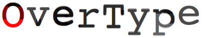
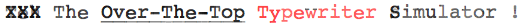
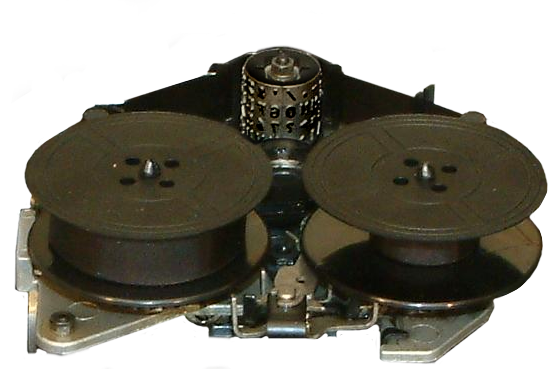

type unix at the @ prompt to load the kernel, enjoy! faq


Font:
Brokenness
Ribbon Ink

You really need to upgrade your web browser. OverType will not work on your browser because it does not support rgba() colours. They've been around for a long time now, so your browser must be pretty old. Using a very old web browser to surf the net means an ever-increasing number of sites will not work properly for you, and may be unsafe due to security holes which have long-since been fixed. Do yourself a favour and upgrade to a modern browser.